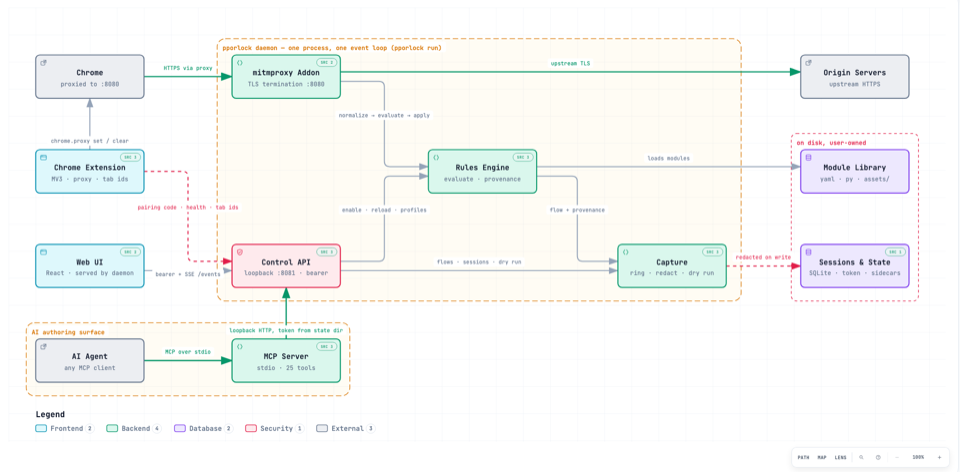
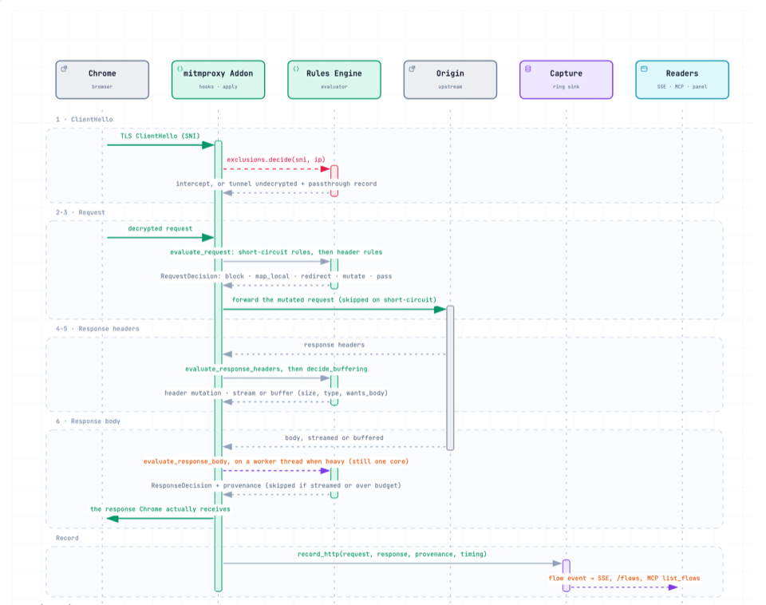
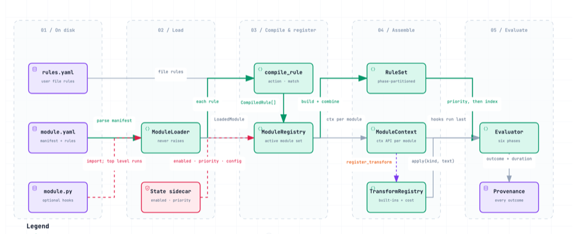

pporlock
Local HTTPS interception and modification for Chrome, with provenance for every flow and an MCP server so an agent can read the traffic and author the modules. Source and README on GitHub.
How it fits together

System architectureThe components and how they collaborate. The MCP server is a first-class client of the same control API as the web UI and the extension.

Request lifecycleOne HTTPS flow through the daemon, phase by phase, including the return path and the buffering decision.

Rules engineFrom module.yaml, module.py and rules.yaml to a compiled rule set; how the Python tier composes with the declarative one.
Guides
- Install — setup, verification, and complete uninstall
- Driving it with an LLM — connecting the MCP server, prompting it, and reviewing what an agent wrote
- Tutorial: a declarative module
- Tutorial: a Python module with state
- Module authoring — both tiers, the transform registry, the ctx API, the trust model
- Module cookbook
- Worked example — one problem end to end, via the UI and via MCP
- Troubleshooting
Reference
- Control API reference — generated from the OpenAPI spec
- Rule and manifest schema — generated from the JSON Schemas
- MCP tool reference — the tool table, the caps, the guardrails
- Open issues